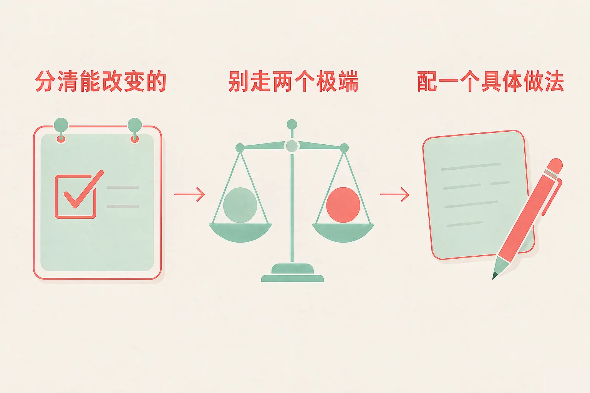
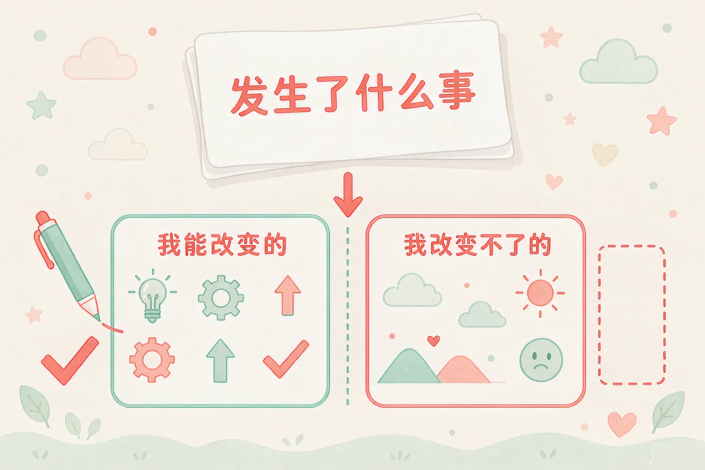
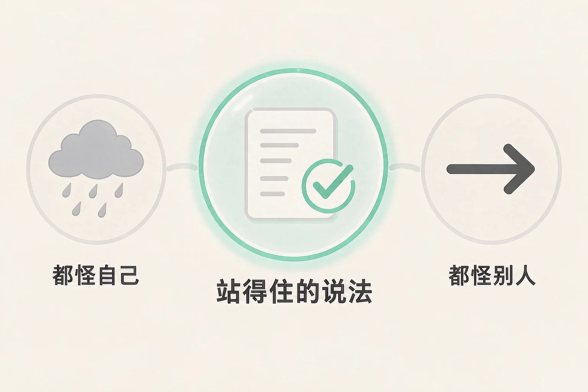

Gallery
v1.0.0 · skill v7.22.0
小学五年级 · 情绪调适
一次比赛输了，心里那句「都怪我，我怎么这么笨」一冒出来，人就沉下去了——这句话能改吗？改完以后先做什么？

选一个你真正想知道的问题，后面的活动都会围着它转。
选择或输入后，这节课会围绕你的问题展开。
先凭直觉选一个，选完立刻看到解释——错了也没关系，正好知道要重点听哪里。
1. 比赛输了，回家路上你一直想「我怎么这么笨」。下面哪个做法更合适？
先把「发生了什么」和「我心里那句话」分开，事情才有下手的地方。错因提醒：常见错误是把「这一次没做好」误认为「我这个人不行」——前者是一件事，后者是一句结论。
2. 下面哪一条属于「我能改变的」？
能不能自己动手去做，是判断的分界线；练几遍由我决定，抽签和天气不由我决定。错因提醒：最容易搞混的是把「别人发挥得好不好」也算进自己的清单——那一条不归你管，写进去只会白费力气。
3. 考试没考好，心里很难受。下面哪句话更站得住？
站得住的说法在中间：承认有我的原因，同时回到今天能做的事上。错因提醒：有人误认为「承认自己有原因就等于认罪」——归因只是把责任放到合适的位置，不是给自己判刑。
为什么要学这一课？
我们已经学过怎么给心里的感觉起名字，也知道难受的时候可以说出来（And）；可是一件事真的没做好，心里立刻冒出来的是「我太差了」，这句话一出口，人就沉下去了，什么也不想做（But）；所以这节课先练第一步——把事情说清楚，再把它分成「能改变的」和「不能改变的」两堆（Therefore）。
一件事没做好，心里会同时冒出两样东西：这件事里发生了什么，和我心里对它的一句话。
① 事情本身
可以核对的：第几棒掉了、哪道题空着、投票时差了几票。它像一张可以摊开来看的清单。
② 心里那句话
常常是一个结论：我完了、我永远不行、我就是笨。它不是事实，它是心里那一刻说出的一句话。

可以照着问自己的两句话：
第一句：这件事里，实际发生了什么？（只讲能看见的事） 第二句：哪几条我能动手改，哪几条我改不了？分完以后，只管左边那一堆。
有的同学误认为「分清哪些不归我管，就是在给自己找借口」。这里最容易搞混的是两件事：找借口的句子说完就没有下文；分清责任的句子说完，后面一定跟着一件我能做的事。判断的办法还是那一句——这句话后面有没有一个能动手的做法？有，就不是借口。
🔍 深层理解 换个角度再看一遍这件事，看看能不能说出背后的原理。
拆开它：一件事可以拆成一条条小卡片。卡片越多越小，能动手的地方就越清楚；只留下一句「我就是不行」，那就只剩下沉。
比较它：「我要把它做好」和「我只能做好」是两句不同的话。前者留着一个能改的空间，后者把结果提前写死了。
迁移它：不只是比赛和考试。和同学闹别扭、排练被换下来、家里有事，都可以先分两堆，再去动左边那一堆。
八张卡片都来自「这次比赛输了」这件事。先在左边点一张，再点上面两栏中的一个。分得不太合适也不会说你错，我会告诉你为什么，还可以换一栏再试试。
先在左边点一张卡片。
写一条你自己的：
想一想最近一件没做好的事，写下其中一条你能改变的。
事情没做好以后，我们心里会解释它为什么发生，这个解释叫做归因。归因很容易滑向两个极端。
极端一：都怪自己
一件没做好的事，被说成我这个人的问题。心里越来越沉，手也抬不起来。
极端二：都怪别人
事情全推出去，自己一点办法也没有。当下轻松一点，下次还是老样子。
站得住的说法
这件事没做好，其中这几样有我的原因，我可以改；另外几样不是我能决定的，我先放一放。

站得住的说法，长这个样子：
「这件事有我的原因」＋「也有别的因素」＋「能改的那几样，我下一步做（一件具体的小事）」。
有的同学误认为「不怪自己就是不认真」。这里最容易搞混的是「有我的原因」和「全都是我的错」——前者是一句具体的话，后面跟着一个动作；后者是一句结论，说完整个人就动不了了。承认原因，不等于给自己判刑。
🔍 深层理解 换个角度再看一遍这件事，看看能不能说出背后的原理。
看见它：两个极端有一句共同的话：把「所有」都交给一个人。「全都怪我」和「全不怪我」，其实都只剩一个答案。
解释它：为什么站得住的说法更有用？因为它把原因拆到能动手的位置上。原因一旦具体，下一步就跟着出现了。
迁移它：和同伴闹别扭、被老师提醒、被家长说了一顿，都可以用一次三件套：有我的原因、也有别的因素、我下一步做什么。
四种说法里，两种是「都怪自己」，两种是「都怪别人」。点开一句，再从三种改写里选一个更站得住的。选得不太合适也不会批评你。
先点一句你自己也想过的话。
轮到你自己写一句：
最近有哪件事，你心里说过「都怪……」？把它改写成站得住的说法。
情境：班里的接力赛，小舟跑最后一棒，交接的时候棒掉了。班里的名次一下退了好几名。回教室的路上，他心里那句话特别重——都怪我，我怎么这么笨。请你陪他走四步。
有的同学误认为「不难受了才算走出来了」，于是先等心情过去。小舟这四步里，心情并没有立刻变好，他确实还很难过。可是他把事实说清楚了，把能做的事挑了出来，还配了一个今天的动作。不是等难受走了才动手，而是带着难受先做一小步。
说给同桌听：小舟这四步里，哪一步你自己已经做到了？哪一步还想再练一练？
先凭直觉选一个，选完立刻看到解释——错了也没关系，正好知道要重点听哪里。
1. 关于「能改变的」和「不能改变的」，下面哪种理解更合适？
分两栏是为了把力气放在能动手的地方；右栏先放一放，不等于不管。错因提醒：常见错误是误认为「分清了就一定会成功」——分清只是让下一步更清楚，结果还要看练习和时间。
2. 下面哪句话属于「都怪别人」的极端说法？
「全都是别人的问题」和「全都是我的问题」是同一个毛病的两面：都只留一个答案。错因提醒：有人误认为「不怪自己就是不认真」——承认有我的原因，和把一切都揽过来，是两件事。
3. 「下次我一定努力」和「今天中午和搭档练十次交接」，哪一句更像一个具体的做法？
具体做法要能回答三个问题：做什么、什么时候做、做多少。答得上来，今天就能开始。错因提醒：最容易搞混的是「决心」和「做法」——决心说的是心情，做法说的是动作。
先选一件你最近没做好的事，把里面的小卡片分到两栏；再给每一个能改变的卡片，挑一个具体做法；最后生成你的下一步清单。分得不太合适也不扣分，我会告诉你它更合适放在哪里。
先在第一步选一个场景。
先凭直觉选一个，选完立刻看到解释——错了也没关系，正好知道要重点听哪里。
1. 这次考试退步了十几名，你心里很不好受。下面哪个做法更合适？
把事实和自己那句话分开，再去动能改变的那一堆，这是最省力气的一条路。错因提醒：有人误认为「想得越久越有收获」——只反复想那句结论，时间过去了，清单还是空的。
2. 参加社团选拔，你被选掉了，心里有点失落。下面哪一条属于「我能改变的」？
报名人数和评委偏好都不归你管；练三遍由你决定，而且是下次马上能用上的。错因提醒：最容易搞混的是把「别人的选择」写进自己的清单——那一条写着，只会让你更无力。
3. 排练时老师把你从原来的位置换了下来，你有点难过。下面哪句话更站得住？
一句话里既承认了自己的那一部分，也留了一个可以问、可以改的动作，这样的人不会停在原地。错因提醒：常见错误是误认为「问一句就等于认输」——去问清楚哪里可以改，恰恰是手里最有用的那张牌。
还要记牢一件事：遇到没做好的事，心里难受、有点沉，是几乎每个人都会有的反应，这很正常。如果有一段时间你一直打不起精神、上课也听不进去，把这件事说给老师或者爸爸妈妈听，是很聪明的做法。
给别人讲一遍：请用「事实、两堆、一个做法」这三个词，说清楚你上一次没做好的经过。
再动一动手：画出你的两栏清单，左边写三条能改变的，各配一个做法；右边写两条改不了的，画一个框把它们先圈起来。
三层练习，做完第一、二层就算通关；第三层留给愿意继续探索的同学。
⭐ 基础巩固（必做）
⭐⭐ 能力应用（必做）
⭐⭐⭐ 迁移挑战（选做）
左边是学它之前要先会的，右边是学会之后可以继续探索的，下面是同一领域的伙伴知识。
图谱正在加载：首次进入需下载知识索引（约 1–3 秒），加载完成后本行会自动消失。